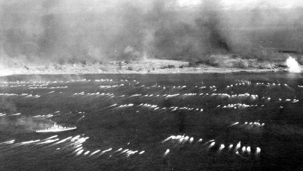

On January 1, 1945 The USS Newberry "sailed from Kahului, Maui, T.H.; 2, arr at Pearl Harbor, Oahu, T.H.; 2-11, anchored thereat;" with the 50 (+1) men from "C" Company listed at the close of Chapter Six. We sat there waiting for the rest of the company who were boarding LST #716. I think we had some liberty days.
Back at Maui we lost six men transferred out. Seven men were left as the rear echelon and two more were in the hospital and later had to join the rear echelon. We were overstaffed at the end of December, but the loss of the 15 men, noted, left us with 236 men to go to Iwo.
On January 10, 1945 the 186 remaining "emb aboard LST #716 at Kahului, Maui." All 236 men "12-17, participated in the landing exercises in the vicinity of Maalaea Bay, Maui, T. H." Newberry only (!) "18, sailed therefrom; 19-26, anchored at Pearl Harbor, Oahu, T.H.; 27, sailed therefrom 27-31, enroute."
LST #716 (and LST's #642 and #723 with other battalion companies) "19, sailed therefrom; (Maalaea Bay) 19-21, anchored at Pearl Harbor, Oahu, T.H.; 22, sailed therefrom 22-31, enroute."
Webmaster Addition: I was on the advance party for LST #716 (I may have been the advance
party since I don't remember anyone else going aboard with me). I was aboard for several days before the troops came aboard,
but I don't remember doing anything so I think it was mostly a vacation for me. In addition to the 186 from Company C aboard
the LST there were some others, most notably the LVT drivers. In total, we probably had more than 250 troops
aboard. LSTs had about 60 or 70 bunks for troops. The top ranks were assigned bunks and all others might be described as
"homeless". We, I was among the "homeless" after all troops came aboard, slept anywhere we could spread our blanket. Incidentally,
blankets had to be rolled up during the day. LST #716 had an LCM (Landing Craft Medium) lashed to the deck and many of us slept
underneath the LCM, we got plenty fresh air and if it rained we were protected from the elements. We didn't do much on the long
voyage to Iwo. We had a relief mock-up of Iwo Jima and reams of data on the troop organizations that were believed to be on
the island (including the names of unit commanders). Much time was spent talking about the map and troop data, but was only of
academic interest at our level. There was a lot of free time so there were many card games and bull sessions.
The most noteworthy event that occurred during our long cruise from Hawaii to Iwo Jima happened at Saipan. I'm not certain of the date,
but a large part of the invasion fleet assembled there around the 11th of February and while there conducted a large scale rehearsal
for D Day at Iwo. This entailed troops loading into the LVT they would occupy on D Day, the LSTs opened their bow ramps, we drove
out into the water, formed into groups, crossed a make believe line of departure, headed for the beach just as we would on D Day. At about
1000 yards from the beach on Saipan we veered off and headed back to our respective LSTs. While we were thus occupied the wind had
risen sharply and the high waves had flooded the tank deck of LST #716. When the LVTs got aboard on the tank deck they were still
floating and and it created bedlam with LVTs sliding around and crashing into one another. Somehow the sailors finally were able to
get some of the water pumped out and tie down the LVTs without anyone getting killed or hurt. I personally was wondering if we were
going to make it. Anyway shortly thereafter the convoy got underway for the final run to Iwo, none the worse for wear.
Tokyo Rose reportedly announced on the radio that "the Fourth Marine Division is leaving Hawaii
for Iwo Jima. When the battle is over you will be able to take Roll Call in a telephone booth!" She was damn near right! It
was a good illustration of espionage. She knew before we did where we were going!
Webmaster Addition: Tokyo Rose was an American citizen whose maiden name was Iva Toguri. She was visiting Japan when the war
started. She had married a Portuguese citizen while in Japan and her married name was d'Aquino. She was one of several women who
broadcast to US Military personnel. They became collectively known to US Troops as "Tokyo Rose". Her broadcast name was "Orphan Ann"
and since she was the only one of the women who was an American citizen she was tried for treason and sent to prison after the war.
Her family operated a book store on North Clark Street in Chicago and after she got out of prison she worked in the book store. In
the 1960's my wife and I often bought books and magazines at the store and "Tokyo Rose" frequently waited on us. At that time
she was an inoffensive looking small lady in her early 50's. President Ford pardoned her during his term in office.
Note that the LST's sailed for Iwo on Jan. 22, 1945, while the Newberry did not sail from Pearl Harbor until the 27th. There may have been some tactical reason for this, but the only reason I can think of is basic speed of the vessels.
We arrived at Saipan on February 11th, where the transfers from the Newberry to various LST's took place. (the details are at the end of Chapter Six.) The convoy sailed from Saipan on the 15th and !6th of February, meeting at Iwo Jima in the early hours of the 19th. My only clear recollection of LST #716 was that we were all fed steak and eggs very early in the morning on the 19th, just before climbing aboard the AMTRAC's . The last meal for many.
Our first sighting of Iwo was mostly of smoke from 73 days of aerial bombardment and the 72 hours of continuous Naval bombardment. Although most of the big guns were knocked out, less than 200 Japanese were killed - (from their records after the war)! Our job was cut out for us.

The actual first wave was always a decoy wave landed at 9:02 a.m., no men were aboard the AMTRAC's except the crew and a gunner; their job was to run ashore, fire a few rounds, then turn around and go back. The second wave was the first wave to land men. "C" Company was in twelve AMTRAC's heading toward Yellow Beach #1. I was in AMTRAC #12 of our group on the left flank, and the battleship Tennessee was in the line of approach for AMTRAC's #10, #11 and #12. We had to close up and go around the Tennessee, which had all its 16" guns blasting as fast as they could load
There was, and always will be, rivalry among the services as to which won the war. The real answer was written all over the faces of the sailors watching from the rails as we went around the battleship and re-lined up for the last 1/2 mile to the beach. The sailors were non-gunnery personnel, just watching the show. Every single face was transfixed into the expression that read "Thank God I'm not a Marine!" I had to smile!
Most of our wave landed at 9:17 a.m. The AMTRAC's only climbed the beach a few yards then dropped the back flap into several feet of breaker water. We exited into water doing a U-turn to get onto the beach. There were 20-25 men in each AMTRAC. Our ingrained training rule was to instantly spread out. (Artillery loved to find clusters of men to wipe out with one round.) I had "run" up the slope about ten yards and jumped into a shell hole. My first lesson for the day was that you could not "run" on that volcanic soil - your feet sank 4-5 inches with every step. When I looked back, waiting for others to come up, no one was behind me and the AMTRAC was headed for another load. Apparently we had beached too far to the left (toward Suribachi) and the company was trying to move right and climb the slope at the same time. Since I was actually the left flank of the company, I started a slanting climb to close up with the others. With the shells landing continuously, it was shell hole to shell hole all the way.
Halfway up the beach, I jumped into a large shell hole and found Jack Ritter - the first Company "C" man I had seen on the beach. He, too, was lost, trying to find the company. We lay on opposite sides of this 30' diameter bomb crater about two feet up from the bottom. Suddenly two artillery shells exploded inside our hole but near the top inside slope above us. The concussion waves through the sand picked us up several feet in the air and dropped us! We were not hurt!
The sun was down when I finally found our company headquarters and was immediately asked to go back to the beach for ammo. I found a trench directly to the beach - probably a spotter line for the Japanese artillery on Suribachi. I can't remember who the men with me were, but we all ran down the trench to the beach in four minutes, that had taken us eight hours to climb.
At the beach I was looking for ammo when I noticed something that made me laugh for the second time on that horrible day. A squad of seven war dogs (Dobermans) with their masters had just landed and the men were furiously digging foxholes for the night. The dogs, each beside its master, were digging in with their forepaws faster than their masters. They were just as scared! Shells were randomly and intermittently landing everywhere, and they were just being initiated. (This is not intended to belittle the dogs. Many tales came out of Iwo of their heroics, deaths, and medals. It just looked funny to me to watch them digging.) We found ammo and each of us took as many bandoleers as possible back to the company. It was about dark when I jumped in a hole for the night near Red Manning's mortar squad
Our battalion casualties for the first day were 12 officers and 181 men. "C" Company only lost
one officer, Lt. "Hap" Hullihan, WIA. We lost five KIA and 28 WIA for our third worst day in our "C" Company history.
Both "A" and "B" Companies lost their C.O.'s , the company execs and two other officers each.
"C" Company KIA: (*= also had been wounded on Saipan)
John Cotter*
Lee Wagner*
Tom Hicks
Alva Anderson - WIA, DOW 26th
Lou Poullos
| Name | Name | Name |
|---|---|---|
| Sgt. Leonard | Robert Horne | Rene Boudreau |
| Joe Bright (refused evacuation) | Howard Cherry | Matt LeSatz* |
| Bob Finch | Bill Booth* | John Fomich |
| Lt. Hullihan | Ernest Haldi | Jim Tobin (B Co. C.O.) |
| John Miksis | Bob Milan* | Phil Fisher |
| Nick Mosura | Arnold Adrian | Harold Nelson |
| Elmer Davis | Beecher Rogers | Fred Schmidt* |
| Bob Socia (see below) | Paul Viel | Ray Wilson |
| Jerry Attili | Joe Youdvirhes | Chas. Frost |
Because of the heavy battalion losses, the 1st Bn. was placed on regimental reserve late in the day of February 19th. Then to top off the losses, in the middle of the night a single large shell killed the Battalion commander, Ralph Haas and our own Fred C. Eberhardt, Bn3. Operations (Officially Feb. 20th .) That was the most bitter pill. We had to reorganize and remained in the regimental reserve. We did not move to any extent for several days, but did reposition ourselves a little.
One of our problems in writing this history is that the term "WIA" was never fully "explained" in our records. That is, we never knew whether the wound was major or minor unless the man sooner or later came back to "C" Company. The Muster Rolls after the "WIA & Evac" notation would sometimes indicate the hospital where he was listed as "SK thereat", and then most were "transferred" to a hospital or to "FMF Pacific" and we never heard of them again. A large number of men are still in that category. Once in a while we hear by accident what happened to a few men, but it is rare. One such incident is the story of Bob Socia
Note that Bob is listed as WIA & evacuated on Feb 19, 1945. The balance of Bob's history in February is simply listed as "19-28, SK, whereabouts unknown". The March 1945 Muster states (under "transferred") "1, only SK whereabouts unknown; 2 (TR) by S/RS to TranC, FMF, PAC. (SK USN#128)". That is the end of Bob's official history in "C" Company. However, just about eight years ago, in the 1990's, Russ Gross accidentally ran into Bob at a racetrack in Williams Grove, Pennsylvania. Bob was quite a race car fan - even though he has no legs. Bob's contribution to his story was that he had just left his AMTRAC on Iwo and went up the slope to a shell hole, just like the rest of us. An artillery shell landed in his hole and shattered one of his legs. A corpsman jumped into the hole, straddled Bob and started to bind up his leg, which was bleeding badly. Another shell landed, shattered his other leg and killed the corpsman. When Bob became active in our association, he indicated he had always wanted to learn who the corpsman was who saved Bob's life while losing his own. Through much research and logical process, we have narrowed the possibility to a 99% certainty that the corpsman's name was Lewis Jennice.
At the beginning of this history, on the page
preceding the Table of contents is a poem about "not forgetting." The lines
reading:
"Or should I just forget about that corpsman standing fast who put his body
over mine and took that mortar blast?"
-uncannily could have been written about Bob Socia. (We don't know the author
of the poem, Robert A. Gannon.)
So much for Day One on Iwo. Our whole battalion remained in reserve to reorganize and stayed near the edge of the airfield for about 4 days. Lt. Col. Blissard became Bn. C.O. Lt. Zimmerman (an ex-"C" Co. officer) became C.O. of "A" Company, and Lt. Carroll became C.O. of "B" Company.
Early in the morning of the 20th, Capt. McDaniel wanted to reposition "Red" Manning's mortar squad and sent word for him to get ready to move out. I had a foxhole (shell hole) with Red's mortar squad (noted above) and decided to go with them. We were walking single file diagonally up the slope - six of us, Red in the lead and myself in the rear. Four of the men were carrying mortar rounds. We started to traverse the narrow lip between two bomb craters when we "felt" artillery shells incoming. Instinctively, all six of us dove into the craters. Our actual positions made me dive into the left while the five men of the mortar squad dove into the crater on the right. A tremendous explosion blew sand over me. As I was shaking off the sand, a chunk of "Red" Manning's arm landed next to me. There was no doubt of the identification. Red's typical complexion of freckles/mottled skin was undeniable. That was the biggest piece left of the five men. Sgt. Kraft, a few minutes later, came over to the far side of the crater and shouted to me, "Was Manning in that hole?" I answered, "Yes, and his whole squad!" He kept shaking his head as he headed back to report to Capt. McDaniel.
Mortar and artillery fire had rained on us all through the night and for the next three days, gradually growing more intermittent. But we were sitting ducks for the Japanese artillery in the caves of Suribachi, although we were not the primary target, being obviously in reserve.
The casualties for D +1 (February 20) in "C" company were 8 KIA
Captain Fred C. Eberhardt (above)
Lt. Dick Davis
Jim "Red" Manning
Joel Carter
Sam Ogg
Elden Atchison
Albert Golick
Gerard Racicot
One of the last three names - I don't remember which - was not in the crater described above.
WIA February 20 - 8 men (8 men KIA and 8 WIA without really moving.)
Norm Clavey*
Don Knopacky
Willard Dart (refused evacuation)
Russ Greenup
Richard Cassidy
Elvin Johnson (see note)
John Hunt (refused evacuation)
Orville Duncan
Note: Although the official muster roll shows Elvin Johnson being wounded on February 20, 1945 Carroll Gregory who was with him when he was wounded remembers the date as February 19, 1945. While the muster rolls are accurate for the most part we have found several other instances where they are not quite correct, especially some dates of wounds or KIA.
The official Battalion operation report stated (between D+1 and D+2) "Artillery and mortar fire fell throughout the night." We got word via grape vine (amazing, but usually accurate) that the 21st Marines, Third Division were landing to assist us and were coming ashore in the Fifth Division area nearer Suribachi, but would be relieving the 23rd, which had been decimated
Both Rowland Lewis and myself had been good buddies of Roy Jones and had kept in touch with
him, now knowing he was in the 21st. Since we were not to be on the attack, Rowland and I got permission to travel across
the beach toward Suribachi to see if we could find him. The beach was still under fire, although constantly diminishing
as the Fifth Division was still on the way to the top of Suribachi. We went from shell hole to shell hole, asking anyone we
saw where the 21st Marines were. It was a slim chance, but darned if we didn't find Roy! Memory says we had half an hour
to catch up on our lives in Roy's foxhole, then Roy's unit had to move out. We did not learn until after the battle that
Roy was KIA. We have never learned when - maybe five minutes after parting, or days later?
The following is an excerpt from Attachment 1 to Chapter 1 which explains why Roy left Company C:
Roy E. Jones was Company "C" barber throughout our
eighteen months of stateside duty, as well as a squad leader. In December 1943,
he suddenly became partially blind, and was confined to the Camp Pendelton
post hospital. He was improving rapidly when our departure date for overseas
duty approached, but the doctors would not release him. Several of us conspired
to smuggle him aboard the LaSalle. (We even alerted Captain Eberhardt that
an extra man might show up while asea.) However, on the planned heist day, Roy
went almost completely blind, so we aborted. Roy did recover and was later
assigned to the 21st Marines, 3rd Marine Division. He was killed in action
on Iwo Jima.
Back in C-1-23 on this D+2, 21 Feb 45, we had one wounded, Angus McCorquodale* (actually now in HQ Co., but we still considered him "C".) Also one KIA, Gerald Casey. Back in Chapter Six I mentioned that Casey and John Cotter had been friends since childhood and played together on the 4th Division football team. Cotter was KIA on D-Day. I saw Casey on the 20th, and had never seen a paler, sadder face. I have no info about the circumstances of his death, but I think he was just waiting for it. Casey and Cotter are still together.
Our whole 23rd Regiment passed to Corps Reserve on Feb 22, D+3, having been replaced by the
21st Marines at 7:30 a.m. We were only a few hundred yards from our first day's position, now on the edge of the airfield.
Feb 23 and Feb 24 still found us in the same position. No casualties on the 23rd, but two WIA and Evac on Feb 24:
Ray Fleischman and Ray Wilson (2nd wound of the battle, had not been evacuated on the 19th ).
After dark on the 24th we received 24 men to replace some of our losses. Word had to be
whispered from foxhole to foxhole so that no one opened fire when they arrived. Guy Rowe, a private at the time, was the
appointed leader of the replacements and has written of his "C" Co. experiences in a letter.
Click here to see Guy Rowe's Memories.
or read the appropriate section below. (Guy survived Iwo, later rejoined the Marines and became a Mustang Captain.
He's still active in our "C" Company organization.)
"On Iwo Jima on the 5th night they brought in replacements and they assigned a young kid to me. He said he was from Minnesota, where I am from. There was battle sounds and confusion all around us so we never got to exchange names. He was on the replacement ship that was coming in when his ship got hit from another ship. He shared my foxhole that first night. I felt real sorry for him because he didn't know anyone, or what we were doing there, and why. I always wondered if he made it or whatever happened to him.
Years later, in 1986, I received a call from Carroll Gregory, who had been a member of my squad, and who located me by phone the previous year. He asked me to get in touch with a fellow C Company member named Guy Rowe. Gregory thought he had joined us as a replacement on Iwo. I found his name in the phone directory, called him, and asked him if he had ever been in the Marine Corps. He replied, "yes!" I said, "What outfit?" He replied, "1-C-23, joined up on Iwo." I said, "You son of a gun, you were the kid that jumped into my foxhole on the 5th day of Iwo, and I always wondered whatever happened to you." He made it! After he got out, he came home and attended the U. of M., then went back into the Marine Corps for 20 years and ended up as a Captain. Today we are fast friends, continuing to see one another, getting together with other 4th Division Marines in our local chapter. SEMPER FI!
That same evening of Feb 24, we received orders that put "C" Company back on attack the next
morning. We moved out at 0600 on the 25th, not having yet seen the faces of our new men. We were to integrate/support the
Third Battalion "K" Company, which took most of the day under intermittent mortar fire. Our Battalion had eight casualties
that day, all of which were "C" Company.
| Name | Name |
|---|---|
| Tony Fusco | Henry Eatmon |
| Lloyd Prevatte | Ken Dorr |
| "Whitey" Havener | Grove Havener (not related) |
| Joe Musalek | Jose Encinias |
The following paragraph is almost verbatim from the operation report for February 26th.
Mortar fire fell all through the night. Our battalion was committed, and "C" Company was to pass right through "K" Co. of the
3rd Battalion, and continue the attack on Hill #382. We moved out at 7:30. The Third Marine Division was to be on our
left flank. They were not! Company "I" of the 3rd Battalion 23rd was to be on our right flank. They were not! "Both our
flanks were exposed due to lack of movement of the flank units. Very heavy mortar, artillery and small arms fire was received from the
front and both flanks. About 10:30 the enemy fire increased in intensity and density against Co. "C" causing heavy casualties!!"
A platoon from "B" Company was committed on the right flank and the rest of "B" company was attached to "C" Company and was
committed to the left flank to try to close up the gap with the 3rd Division. Our heavy casualties was caused by enemy
positions firing into our left flank and from Hill #382. We pulled back to a designated area for the night. Ammo was
depleted and carrying parties had to cross fire swept areas.
I was sent back to the far rear to expedite the necessity for ammo and ran all the way. I got
jeeps to bring me back with the ammo. "At dusk, I witnessed our rocket trucks in action for the
first time. I'm glad they were on our side." Our battalion casualties for the day were 7 officers and 104 enlisted., of which
"C" Company listed 3 officers and 59 enlisted. This broke down to 15 KIA (one WIA later DOW), and 47 WIA-Evac in "C" Company
our worst day ever. More than 27% of a full company in one day.
Click here to see newspaper account of Lt. Henry Burns' last day in action. He took nasty hits and
was about two years in hospitals. Our webmaster, Rowland Lewis took a few bad ones
and was gone for the duration.
| Name | Name | Name |
|---|---|---|
| Rich Winegar | Irvin Mayer (see Chap. 5) | Joe Penta |
| Joe Falcone | Sid Gottschalk* | Waldemar Beck |
| Rae Nunamaker* | Earl Griffith | George Rittersbacher |
| Benj Benson* | Wally Cady | Lt. John Dahl (one of our new officers) |
| Patrick SanPietro | Seymour Feintuch | Earl Eaton (WIA, DOW 3/1) |
| Name | Name | Name |
|---|---|---|
| Lt. Henry Burns | Bill Fowler | John Gaeta |
| Lt. George Cire (2nd wound on Iwo) | Delmar Gibson | Bill McVey* |
| Lt. Joseph Clemmer (joined us on the 24th) | Paul Kreider* | Norbert Adamski |
| Homer Booth* | Chas. Chibookian | Ray Daly |
| Rudy Varoga (refused Evac.) | Charlie Robertson | James Skidmore |
| John Nicholopoulos | Pete Devecka | Wilber Dulin |
| Ralph Faulkner* | James Dobyns | Tom Droski* |
| George Franklin | Harry Hansen* | Alan Edwards |
| Robert Higley* | Ulysses Guy | H.K. Johnson |
| Roger Ross (joined 24th, refused Evac.) | Karl Kennedy | Tom Lawrence |
| Gerald White (joined 24th) | Ed Maderer* | John Wigget |
| Rowland Lewis* | Bernard Smetanka | Ed Matyasz |
| Robert Blosch (refused Evac.) | Fred Boone | Bill Finnerty* |
| Arnold Bredesen | James Brown | William Carey |
| Joe Lukasavage | Lou Klins | Earl Eaton (see KIA) |
| Horace Cloud | Rich Cooper |
Webmaster Addition: February 26, 1945 turned out to be my last day in Company C, 23rd
Marines. I was a charter member of Company C so it had been a long journey from the the hot summer days of July 1942 in New River, N. C.
where we were activated to the bedlam and chaos of Iwo Jima in February 1945. The evening of February 25, 1945 Company C dug in at
the edge of the second airfield. The company line was just short of the runway and the the unit leaders dug in at the bottom
of the fill embankment which was probably about 15 feet lower than the airport runway. I dug in that night with Homer Booth
who was the Section Leader of our attached Machine Gun Section. Lt Burns the Platoon Leader was dug in to the right of us, I don't remember
who his foxhole partner was. Sometime after midnight Homer woke me (I was on my two hour sleep shift) and whispered to me that there was
a Japanese patrol at the top of the embankment, but he couldn't fire at them because his Thompson Sub-Machine Gun was jammed. I could see three
Japanese clearly visible by the light of the flares that constantly illuminated the battlefield. It was easy to tell the
difference between Japanese and US personnel because of the distinctive shape of their helmets. My carbine had so much sand
in it that I could not pull back the bolt to load a round into the chamber so we didn't have a workable weapon between us. We then
began to wonder, in whispers, why no one else had seen them. At about that time they were spotted and there was a flurry of
fire that killed two of the three the last one jumped up and came charging down the embankment shouting banzai and swinging a saber.
He headed for our foxhole so we both got out of the hole to meet him, I got my carbine turned around and was holding it by the
end of the barrel. When he got close to me he swung the saber at me, fully intending to behead me, but I ducked and swung my carbine
with all my strength. He missed but I didn't, the saber went over my head (I could hear the whoosh and feel the air). My
carbine hit him just below his helmet line with enough force that the stock broke off at the pistol grip. That took all the fight
out of him, but Homer and I still took a few more whacks at him. By that time a number of people were out of their foxholes and
someone shot the Japanese soldier which was probably not necessary since I believe we had already beaten him to death. Capt McDaniel
came from the Company CP to get everyone settled down and back in their foxholes. We settled back in our foxholes and Homer cleaned
his Tommy Gun and got it clean enough that he could feed a round into the chamber. I, of course, no longer had a workable weapon.
Not long after dawn Capt McDaniel came into the platoon area to brief Lt Burns and myself on the day's attack plan. He was
carrying two carbines of which he handed one to me saying "You may need this today". We could guess the plans for the day
since the area directly across the airport runway had been under heavy bombardment by artillery and Naval gunfire for some time.
We jumped off a short time later with all three platoons abreast with second platoon on the left, first platoon in the
center and third platoon on the right. When we jumped off, we double timed across the airport runway since no one wanted
to get pinned down on the runway where there would be no cover. As we crossed the runway the artillery and Naval gunfire
lifted and started firing couple of hundred yards ahead of us. As soon as we (the first platoon) were across the runway some
of us saw the Japanese coming out of a large emplacement and presumably headed for their individual spiderholes. They were
taken under fire, but their exposure was so brief that no discernable damage was done before they got under cover and out
of sight. My estimate is that the platoon suffered about 20 killed or wounded in the next few minutes. The slaughter stopped
when we were able to get our attached Machine Guns in action and they were able to pin down our unseen enemy. The artillery and
Naval gunfire was called back in about 50 yards in front of us. Carrier planes came in on bombing and strafing runs also
maybe 50 or 60 yards in front of us. Unfortunately none of this was of any direct help since our enemy was no more than 25 yards in
front of us.
While Lt Burns was working to get our casualties out, Capt McDaniel told me we we going to pull back across the airfield
so they could call artillery fire into the area we were occupying. He told me to send someone over to tell the third platoon
to pull back across the airport. I told Richard Winegar to go tell the third platoon to pull back and he should stay and come
out with them. Richard Winegar was killed while trying to find the third platoon (I didn't know this until later). Both
Capt McDaniel and I thought the third platoon was on our immediate right flank. However, they hadn't encountered the Japanese
positions as soon as the first platoon and when we were pinned down they continued to move which opened up a large gap between us.
We pulled back to about the same position we had occupied when we jumped off a couple or three hours earlier. Shortly after
we got back Lt Burns was hit with machine gun fire and evacuated . Some time later Capt McDaniel told me that the third platoon
had not came out and I should take a couple of men and go bring them back. I took Herb Johnson and one other whom I no longer
remember and we went back across the runway. I still believed we would find the third platoon just to the right of the area
we had occupied. We angled to the right in crossing the runway, thinking we would be just behind the third platoon. Of course.
that was where there were a lot of Japanese soldiers, but no one from the third platoon. We came under fire immediately, I
was hit in the left forearm and while trying to find a shell hole to get some cover I was hit a second time in the upper abdomen.
Both hits were penetrating and neither hit a bone. I staggered into a 16 inch shell hole so I was under cover. I didn't see
what happened to Herb Johnson or the other man. I next saw Herb on a ship load of wounded bound from Saipan to the Naval hospital
in Hawaii. Herb had been hit in the head and he didn't know who I was nor did he know what had happened. In recent years, I made
Internet searches for Herb without results. I have never been able to remember who the third person was so I don't know
what happened to him.
I would judge that it was about noon time when I was hit. So I found myself lying alone and in shock at the bottom of a shell
hole. I could see that my dungarees were soaked in blood and I, of course, didn't feel well. My first thought was that the
Japanese would come into the shell hole to finish me off so I got ahold of my carbine, laying a few feet away, and could see
there was no magazine in it. It had fallen out I know not where. It was at this point I found out what bad shape I was in,
I tried to insert a loaded magazine into the carbine, but didn't have the strength to lock it (a very simple procedure). So
I lay in the hole the rest of the day, sometimes unconscious and other times conscious. About mid afternoon a Navy Corpsman
suddenly jumped into the hole, I first thought it was a Japanese, put a couple of bandages on me and left. I don't know who
he was or where he came from or where he went The bandages slowed the bleeding which was probably a lifesaver. I lay the
rest of the afternoon drifting off into never never land mixed with periods of being awake and worrying that the Japanese
would find me before someone from Company C did. At dusk just as I came out of one of my dreamy periods I heard someone say
"Its Lewis". I looked up and it was Ed Rajkowski with several others carrying someone in a poncho. Ed was in the first
platoon, but when the gap opened he ended up with the third platoon. They were carrying the Third Platoon Leader who had a
broken leg (I believe it was a Lt Clemmer who had joined the company on February 24th). Ed told me they had seen
Richard Winegar's body. There was a discussion about how they were going to get both of us out. It had been five or six
hours since I had been hit and by then I was too sick to have any input to the discussion. Finally Lt Clemmer asked for a
rifle and he used it as a crutch. They put me in the poncho and we started out immediately coming under fire. They dropped me
and returned fire and that is the last thing I remember until I came to on a stretcher on an ambulance jeep headed for the beach.
I'm sure if those folks hadn't found me and carried me out, at considerable risk to themselves, my bones would still be bleaching
in that shell hole.
When I got to the beach, I was put in hospital tent on the beach and they began administering whole blood. I was there several
hours and most of the time they had an IV in my arm dripping in whole blood. The beach was under mortar fire and every now
and then when rounds started falling close, the staff would leave to get in foxholes or trenches. The patients just had to
stay in place and hope they didn't get hit. There were no lights in the hospital and while I knew there were other patients
I couldn't really see them. After several hours, I guess it was probably past midnight, I was carried down to the beach and
put on an LCM (Landing Craft Medium). As soon as the deck was covered with stretchers we got underway and went out probably a
couple of thousand yards and tied up along side an LST (Landing Ship Tank) where we were all hoisted up one at a time and laid
out in rows on the deck. We stayed there until the deck was covered with stretchers. We got underway and headed further out.
At about this time I started having convulsions (it had been 12 or 14 hours since I was hit). However, I was strapped on to
the stretcher so I couldn't go anywhere, just strain against the restraining straps. We finally arrived at the President Adams
a former passenger ship which had brought troops to Iwo Jima and was now being loaded with casualties. I was conscious when
they finally hoisted me aboard. A Navy Corpsman was doing triage, he would decide where a patient was to go and sailors from
a working party would take the person away. When he saw me I heard him say to someone "We better get the chaplain for this
one". I was set aside and after awhile someone , I assume it was a chaplain, came and kneeled beside my stretcher and talked
with me. I have no memory of what was said, but after he left a couple of sailors from the working party carried me down to a
makeshift hospital ward. It was now dawn and it had been about 18 or 20 hours ago that I had been hit. When I got to the hospital
ward, the doctor on duty talked to me a little, then gave me a shot of morphine. That was the first and last painkiller I had.
When I woke, they had an IV in each arm and a tube in my bladder. They were dripping blood and glucose into my veins and
draining fluid from my bladder. Being young and healthy except for the two bullet holes, I was up walking around in about
three days and we were underway headed for Saipan. Thus began a journey through a number of hospitals which culminated in a
medical discharge from the Marine Corps on November 26, 1945. Nime months to the day after I was hit on Iwo.
Sorry folks I didn't intend to go on this long, but February 26, 1945 was a defining day in my young life!
D+8 - February 27, 1945. Early morning had "A" and "B" Companies taking over the attack and
"C" Company was supposed to be in reserve. However, we moved to an area on our left rear which had been bypassed by the
3rd Division (and they never had appeared on our flank the past two days as was planned.) We wound up killing 50 enemy men
("official" operation report) and knocking out two machine gun nests. We had 4 men KIA, 1 WIA-DOW 3/5, and 4 WIA.
KIA
Alan Chapman*
Ed Rashid
Fred Rowe*
Cliff Ward*
John Penberth (WIA-DOW 3/5)
WIA
Art Rodriguez
John Moeller
Tom Lori
Ed Simon (joined 24th)
Russ Gross, John Penberth, Allen Chapman, and Ed Rashid were near hill 382 in a 16 inch shell hole when "Boots" (Carlos) Showalter, platoon guide, ran over and asked Russ to accompany him to bring back water rations and ammo. Russ reluctantly went with him as Carlos really needed pack mule assistance. Russ and Carlos were on their way, less than 100 feet from the shell hole, when a "cannister round" exploded. Russ said it sounded close to where they had just left. On their return to the hole, both Chapman and Rashid were dead. The corpsmen had just removed Penberth's leg. He died on March 5th. Russ says: "so you see that Carlos Lee Showalter saved my life."
John Penberth was of a family of ten kids in Weissport, Pa. John had told me (author) back in our North Carolina days that his family rarely had enough bread to go around (-the Great Depression). He had really loved the Marine Corps chow!
"That same afternoon I (Russ) journeyed over to "Pappy" Parker's foxhole to chat awhile. After 10-15 minutes I headed back to my domain. Again, only about 200 feet away I heard another cannister round explode near Pappy's area. I hurried back, and there was old Bill sitting just as I'd left him, staring into space. "Bill", I said, "Are you ok?" "Yes" he said, "but the dirty s.o.b.'s got my last pipe!" A piece of shrapnel had cut the bowl right off the stem, and the stem was still clenched in his teeth."
(On Saipan, on the 3rd or 4th day the author witnessed a bullet cutting the handle of a foxhole shovel in two - on Pappy Parker's back! He attracted close shaves.) Two close shaves for Russ in one day; one tragic, and one eventually funny. (Pappy Parker survived the war.)
Russ closes with the following: " This was certainly a very exciting place to be and I wouldn't have wanted to be back stateside working along side a lot of women and making a lot of money, for all the tea in China. But I was a man of action and still am - except the action now is sitting on the front porch rocking and rocking."
D+9 - February 28, 1945. Take a look at the "Green Book" color map of Iwo to see how the front lines swirled around so that the front was everywhere at the end of February. We still were in the Hill #382 vicinity with some 2nd and 3rd Battalion units with us. Two platoons of "L" Company were attached to us to fill in the gap between us and the Third Division. We did not have very many men left - sometimes company strength units had to do the job of battalions, and platoons had to do the job of companies, etc.
"C" Company casualties for the day were one man DOW and two WIA. Plt. Sgt. Willard Johnson was buried on February 28 but the record does not indicate when he was wounded or DOW. Sgt. Alva Anderson DOW having been wounded on the 19th , D-day. WIA were Pete Zocchi* who had to be forced to evacuate with a large hole clean through his arm. He went around apologizing to everyone he could see for leaving them in "Hell" while he was headed for a hospital bed. The other wounded was Bill Dawson.
D+10 - March 1, 1945. The 2nd Battalion, 24th Marines relieved us (the 1st Battalion, 23rd) in position, and our battalion moved to an "assembly" area to prepare for final assaults. "C" Company had no casualties on this day but Earl Eaton DOW (WIA 26th).
March 2 was a regrouping day for our battalion, including receiving 91 replacement men after dark. "C" Company got 51 of these new men. One of these men was WIA immediately, and DOW on March 10 - Clinton Jones - we never saw his face. Also WIA on March 2 was Joe Bright. Joe Harrington was KIA on March 2 also. At 10:00 P.M. we got word to relieve the First Battalion, 25th Marines before daylight.
March 3, 1945. This is an opportunity to illustrate the actual official Battalion Operation Report,
although maps would be necessary to completely understand it.
"DOG PLUS TWELVE, 3 MARCH, 1945
Took over zone of action of BLT (Battalion Landing Team) 1/25 by 0630. BLT 1/23 with main effort on the left and one Plat of Co C, 4thTkBn, and one Plat
of Co C, 4thEngrBn, attached, continued the attack to O-3. Co A was on the line with Co C echeloned to right rear in support.
Co A attacked at 0730 with Co B, RCT 24 on left. As Co A advanced, Co C filled in on the right. Co A advanced under intense
and accurate rifle fire with sporadic mortar fire, about 250 yards to the ridge in the center of TA 184F (this term describes a
map location). Co C moved about 500 yards into TA 184F. The engineers cleared a path and a dozer tank made a road onto the
ridge north of a large block house. From the road a flame thrower tank and engineers worked all afternoon on the blockhouse in
TA 184F. Two other tanks which had worked on to the ridge, were used all day firing into enemy positions. At 1630, Co B passed
through Co C in an attempt to make contact with Co F, RCT (Regimental Combat Team) 25. The attack was stopped by heavy enemy MG (machine gun), rifle, and mortar fire.
Co B made contact with Co K after dark and lost three men in an anti-personnel mine field in making contact with Co A. Co C
and engineers mopped up in rear of BLT zone. Co C was BLT reserve for night about 200 yards in rear of assault companies.
Battalion casualties for the day were one (1) officer and seventy-nine (79) enlisted."
Please note that "C" Company was indicated in the report above as essentially "in reserve". There really wasn't any "reserve" area on Iwo for the entire "twenty six" days of the official battle. Note the battalion casualties were 1 officer and 79 enlisted. "C" Company lost the indicated 1 officer and at least 20 of the enlisted. Captain "Champ" Mac Daniel left his right arm there that day. Although he has missed it over the years, it did not diminish his bravery and brilliance, and I, for one, am still proud to call him "Sir". (He became a Major before his medical discharge.) Of the other "C" Company casualties for March 3, eleven were KIA/DOW and eleven WIA. (Some of the WIA died of wounds and are listed here with the KIA. I also listed one man whose wound date is unknown.)
| Name | Name | Name |
|---|---|---|
| Ralph Mooney* | Ray Bradley** | Robert Miller** - WIA 3rd, DOW "before 12th" |
| Ed Ganninger | Charles Glasgow | Paul Robbie - WIA 3rd, DOW "before 11th" |
| Ed Nugent | John M. Riley** - WIA 3rd ,DOW 5th | Owen Reiman - DOW 17th? (WIA date unclear) |
| Fred Boyer** | Stanley Best - WIA 3rd, DOW 9th |
| Name | Name | Name |
|---|---|---|
| Captain MacDaniel* | Russell Bub**? (not sure when joined) | Tom Darcy |
| Rudy Varoga* | George Schaper | Charlie D. Jones |
| Jim Owens | Larry Yates | Charles Rampino |
| Ed MacNamara | Crockett Rhodes** |
March 3 was fifth in rank of our worst casualty days, and was the last major skirmish of our history. From March 4 to march 16 we were engaged in mopping up. Organized resistance was apparently over, but we did incur more casualties
| Name | Name | Name |
|---|---|---|
| George Bonnert - WIA Mar 4 | James Farrell - WIA Mar 9 | Don Kincaid - KIA Mar 15 |
| Ed Mossak - WIA Mar 4 | **Lloyd Irwin - WIA Mar 13 | |
| **George Peabody - WIA Mar 5 | Robert Blosch - WIA Mar 15 |
During this final period (I've forgotten the exact day,) Don Latsch, Earl Wacaster and I had been on an errand (forgotten the details) back at the rear area in the company jeep. While returning to the company we tried to take a shortcut. (There really were not any roads on this rocky, volcanic desert.) We saw what could have been a path and started to follow along this 4-5 foot wide "path", noticing that a small yellow flag, about twelve inches high, was stuck in the ground about every twenty feet. None of us knew what the flags were for. After riding over about twenty or thirty of those flags, we rounded a bend and discovered a group of engineers with a Geiger counter. They scattered, yelled and waved us to stop. Apparently the yellow flags indicated land mines! The terrain, except for the path, was nothing but rocks on a sloping hillside. We had nowhere to go but back the way we came! On the simple logic that the mines did not explode on our way to this spot, therefore would not explode on the way back, we went back over the same flags. We also did not place much faith in the engineers. Since you are reading this, we obviously made it!
Several days later, Don Latsch and I happened to come across this same spot. Every yellow flag had been replaced with an excavated huge land mine. They were shaped like half a tennis ball with a three foot diameter. We learned that the safety pins had never been pulled! The Japanese used picric acid in their explosives, which is highly unstable. It was used a lot in the Boer War by the British, and was known even then for its instability. The lowly Japanese privates on the detail burying the land mines were afraid to pull the safety pins! If they had pulled the pin on even one of them, Latsch, Wacaster, and myself would still be on the way up!
For the last five days we were in the same position at the end of the island, engaged in patrols and burials of dead Japanese, etc. On March 15 we received word to prepare to go aboard ship on the 16th, as the Fourth Division's assignment was finished. (Many of us went back to the cemetery dedication on the 15th.) our position had not changed for the last five days. Don Kincaid, who had been unhurt through all our battles, walked over to his machine gun to dismantle it for the return to shipboard. A sniper got him between the eyes! Don was the last "C" Company man killed in the war. (Ralph Linaweaver was first, on Saipan.) Nick Zingaro witnessed this and still remembers it more distinctly than anything else in his thirty years as a Marine. Nick is currently active in the Sergeant-Major organization.
There were 141 men boarding the U.S.S. Kingsbury on March 16 for the return trip to Maui
(including five more men who joined us on March 7, not previously mentioned.)
236 men from "C" Company landed on Iwo Jima 19 Feb 1945
82 men joined during battle
318 total
-141 boarded U.S.S. Kingsbury to return to Maui
177 casualties of some type. (Does not count wounded - not evacuated.)
(Included in the 141 returning are Don Latsch and Earl Wacaster, who actually returned with the jeep on the U.S.S. Rockbridge!)
The official First Battalion statistics indicate:
906 men landed on Iwo Jima
637 casualties (not counting WIA - not evac)
327 replacements during battle
Above figures do not include Navy medical corpsman.
Written by John Seymour
Word Processing by Joline Doersam
Input by various former Company C members
Maintained on web site by Rowland Lewis
Last Modified 01/16/2006